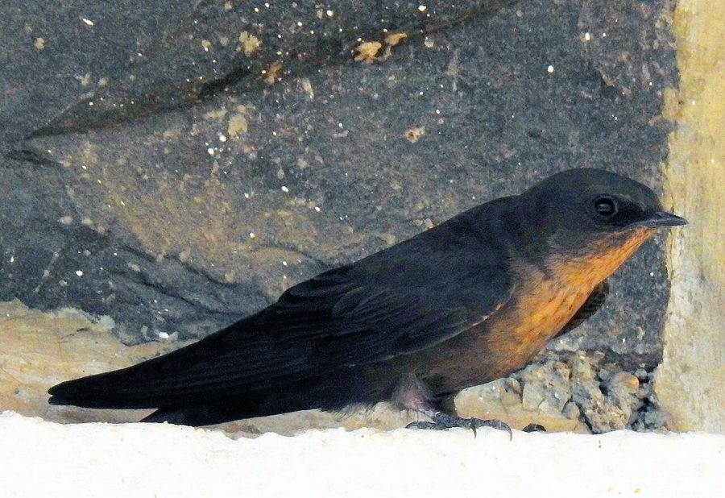

डस्की क्रैग मार्टिनDusky Crag Martin
Ptyonoprogne concolor · Hirundinidae · BRD-0240

- Scientific name वैज्ञानिक नाम
- Ptyonoprogne concolor (Sykes, 1832)
- Family कुल
- Hirundinidae
- Hindi हिंदी
- डस्की क्रैग मार्टिन
- Local names स्थानीय नाम
- dusky crag martin, martin
- Status here यहाँ की स्थिति
- native
- Movement आवागमन
- Resident, here all year
- Known from कहाँ दर्ज
- Others have published records from the Basti–Ayodhya districts बस्ती–अयोध्या के ज़िलों से दूसरों के प्रकाशित अभिलेख
- IUCN IUCN
- LC
- Review समीक्षा
- audited and independently read
When to look कब देखें
Present all year. साल भर मौजूद।
Largely resident year-round in suitable habitat on cliffs and rocky outcrops. Some local seasonal movements in response to insect availability. All migrants and visitors →
Uses and possibilities उपयोग और संभावनाएँ
Drawn from the documented uses in the profile below, where each is labelled traditional, current or a research lead. All uses →
Tell it apart from इनसे अलग पहचानें
डस्की क्रैग मार्टिन / Dusky Crag Martin
Ptyonoprogne concolor (Sykes, 1832) — Hirundinidae
डस्की क्रैग मार्टिन — यह तेज़ उड़ने वाली चिड़िया चट्टानों की दरारों में घोंसले बनाती है। इसका शरीर भूरा होता है, गहरा भूरा नहीं बल्कि मिट्टी जैसे रंग का। यह पूरे दिन आकाश में उड़ती रहती है और पतंगों और अन्य छोटे कीड़ों का शिकार करती है। इसकी आवाज़ किलकारी जैसी होती है। नदियों के किनारे की चट्टानों या पुराने किलों की दीवारों पर इसे देखा जा सकता है।
Quick Identification त्वरित पहचान
| Feature | Description |
|---|---|
| Size | Small swallow; 13–14 cm long |
| Plumage | Dusky brown overall; uniform coloration |
| Head | Brown; small eyes |
| Bill | Short, broad, pointed; adapted for aerial feeding |
| Wings | Brown, relatively broad; adapted for manoeuvering |
| Tail | Short, squared; brown |
| Rump | Same colour as back; no contrast |
| Legs | Short; feathered |
| Behaviour | Constantly in flight; acrobatic; rarely perches |
| Call | Twittering, chirping sounds in flight |
Field tip: A small, dusky-brown swallow with uniform coloration and no white patches. Seen in flight over rocky areas and cliffs, performing acrobatic aerial manoeuvres while catching flying insects. Often in small flocks. Nests in caves, crevices, and tunnel-shaped mud nests on cliff faces or old buildings. More solitary in flight habit than barn swallows.
हिंदी — कैसे पहचानें:
भूरी अबाबील।
चट्टानों के पास उड़ती है।
तेज़ उड़ान, मोड़।
छोटी, पूंछ छोटी।
रंग एकसमान, कोई सफ़ेद पैच नहीं।
Morphology आकारिकी
Biometrics:
| Measurement | Range |
|---|---|
| Total length | 130–140 mm |
| Wing (flattened chord) | 95–110 mm |
| Tail | 45–55 mm |
| Bill | 8–10 mm |
| Tarsus | 8–10 mm |
| Weight | 17–22 g |
Size: 13–14 cm long; wingspan 26–31 cm. A small, compact swallow.
Plumage: Dusky brown overall; uniform coloration throughout. Head brown. Back brown. Rump same colour as back (no contrast). Wings brown; feathers darker-edged. Tail brown, square-cut. Underparts pale buff-brown; slightly paler than upperparts but no strong contrast.
Head: Small, rounded. Eyes dark; positioned for aerial foraging.
Bill: Short, broad, black. Wide gape for aerial insect capture.
Wings: Relatively broad, blunt-pointed; adapted for manoeuvering in and around cliffs and gorges.
Tail: Short, squared or slightly notched. Unlike swallows with forked tails.
Legs: Short, feathered; yellow or reddish.
Sexes: Similar; subtle size differences.
Vocalisations. Vocal in flight:
- Call: Twittering, chirping sounds given in flight.
- Contact: Calls between flock members.
- Alarm: Sharper notes when disturbed.
हिंदी: उड़ते हुए किलकारी मारता है। छन्-छन् आवाज़।
Behaviour & Ecology व्यवहार और पारिस्थितिकी
Aerial insectivore: Feeds exclusively on flying insects captured on the wing. Feeds on:
- Flying insects (flies, small beetles)
- Flying ants
- Small moths and butterflies
- Small aerial invertebrates
Hunting technique: Constantly in flight, making acrobatic sweeping movements to capture insects in air. Very manoeuverable flight in confined spaces near cliffs.
Flight: Swift, acrobatic flight characteristic of swallows. Able to manoeuvre in and around cliff faces and rocky outcrops.
Roosting: Roosts in cave entrances, crevices, and on ledges.
Social behaviour: Often solitary or in small flocks. Less gregarious than barn swallows.
Habitat specialist: Strictly associated with rocky areas, cliffs, and gorges. Requires suitable nesting cavities.
Breeding: Monogamous. Nests in caves, crevices, and tunnel-shaped mud nests on cliff faces.
हिंदी: हवा में कीड़े पकड़ता है। चट्टानों के पास तेज़ उड़ता है।
Life Cycle / Phenology जीवन चक्र
Resident: Present year-round in suitable habitat. Some local seasonal movements with insect availability.
Breeding: Breeds April to June; sometimes earlier depending on region. Nests in caves, crevices, or mud nests on cliff faces.
Eggs: Typically 3–4 white eggs.
Incubation: Approximately 14–16 days by both parents.
Chicks: Altricial; brooded by parents. Fed regurgitated insects.
Fledging: Young fledge at approximately 3–4 weeks.
Seasonal activity: More active and vocal during breeding season.
हिंदी: साल भर रहता है। बसंत में प्रजनन।
Host Plants or Prey आहार
| Food Type | Examples | Hunting Method |
|---|---|---|
| Flying insects | Flies, small beetles | Aerial hawking |
| Flying ants | Alate ants | Aerial capture |
| Small moths | Various species | In-flight capture |
| Small aerial invertebrates | Gnats, midges | Aerial hunting |
हिंदी: सिर्फ उड़ते हुए कीड़े खाता है। हवा में चोंच से पकड़ता है।
Predators / Natural Enemies शत्रु
- Small raptors: Shikra, small falcons
- Snakes: Cave-dwelling snakes
हिंदी: उड़ती हुई चिड़िया को शिकारी खतरा।
Agricultural / Human Relevance कृषि प्रासंगिकता
Pest control: Feeds on flying insects including agricultural pests.
Protected status: All wild birds protected under the Wildlife (Protection) Act 1972, Schedule IV. Hunting is illegal.
हिंदी: यह विधि अधिनियम 1972 के अंतर्गत संरक्षित है।
Expected Locally स्थानीय रूप से अपेक्षित
Not a field record. Written from published accounts for eastern Uttar Pradesh. No confirmed local sighting yet — if you have seen it, that is what the atlas needs.
अभी तक स्थानीय पुष्टि नहीं। यह विवरण प्रकाशित स्रोतों से है, किसी अवलोकन से नहीं।
The Dusky Crag Martin is expected as a resident of rocky areas and cliffs in eastern Uttar Pradesh throughout the year. Look for this small, dusky-brown swallow in flight over rocky outcrops, river cliffs, and gorges, performing characteristic acrobatic manoeuvres. It may also be found around old structures with suitable nesting cavities. Unlike barn swallows, it is less gregarious and often flies solitarily. A first record would require clear observation of the bird in flight showing its uniform dusky-brown plumage and compact shape, with place and date, submitted through the About page.
Distribution वितरण
Global range: South and Southeast Asia; resident in rocky and hilly areas.
In India: Distributed throughout suitable rocky habitat in the peninsula and northern regions.
In Uttar Pradesh: Found in suitable rocky areas; distributed throughout.
In Basti district / eastern UP: Resident in rocky areas and cliffs, including river gorges if present. Year-round.
Research Questions शोध प्रश्न
- What is the population size and distribution of Dusky Crag Martins in rocky areas of eastern UP?
- क्या यह प्रजाति साल भर एक ही क्षेत्र में रहती है, या मौसमी गति है?
- How does nesting site selection vary by cliff type and orientation?
- What is the composition of the aerial insect prey, and how does it vary seasonally?
- How are populations affected by loss of suitable nesting habitat due to quarrying and cliff erosion?
- क्या पुरानी इमारतें जिन्हें तोड़ा जाता है, इसकी जनसंख्या को प्रभावित करती हैं? (A child can monitor cliff and building sites and record presence.)
Similar Species मिलती-जुलती प्रजातियाँ
| Species | Key Difference | Hindi | Field Rule | |
|---|---|---|---|---|
| [[barn_swallow\ | Barn Swallow]] (Hirundo rustica) — winter visitor | Larger; red-blue head and upper back; white underparts; forked tail | अबाबील | Barn Swallow is larger with contrasting red head and blue-black back. Dusky Crag Martin is uniformly dusky-brown. Barn Swallow has forked tail. |
| [[red_rumped_swallow\ | Red-rumped Swallow]] (Cecropis daurica) — partial migrant | Larger; red rump and cap; pale underparts; different habitat | लाल कमर अबाबील | Red-rumped Swallow has red rump and cap. Dusky Crag Martin is uniform dusky. |
Field rule: A small, uniform dusky-brown swallow without any white or contrasting patches, found in flight over rocky areas and cliffs, is a Dusky Crag Martin. The lack of contrasting plumage, small size, and cliff habitat are diagnostic.
Taxonomy & Classification वर्गीकरण
Original description. Described by William John Sykes in 1832 in Proceedings of the Zoological Society of London as Hirundo concolor. Type locality: southern India.
Subspecies. Two subspecies; P. c. concolor occurs in India.
Family and order placement. Order Passeriformes; family Hirundinidae (swallows and martins). The genus Ptyonoprogne contains the crag martins.
Phylogenetic notes. Dusky Crag Martin is one of the crag martin species in the genus Ptyonoprogne, characterized by cliff-dwelling and aerial insect feeding.
IUCN status rationale. Assessed as Least Concern (LC). The global population is large and stable. The species is adaptable to various rocky habitats.
हिंदी: भारत में आम रहने वाली अबाबील है।
Photo Gallery फोटो गैलरी
No photos yet — add field photos to media/species/dusky_crag_martin/ and run node scripts/sync_photos.js.
Wanted photos:
- In flight showing uniform plumage
- Over cliff or rocky area
- Perched on rock or cliff edge
- Pair at nesting site
- Close-up showing dusky-brown coloration
References संदर्भ
- Sykes, W.H. (1832). Proceedings of the Zoological Society of London: 85–92.
- Ali, S. & Ripley, S.D. (1987). Handbook of the Birds of India and Pakistan. Vol. 6. Oxford University Press, New Delhi. Pp. 142–144.
- Grimmett, R., Inskipp, C. & Inskipp, T. (2011). Birds of the Indian Subcontinent. 2nd ed. Christopher Helm, London. Pp. 243–245.
- Turner, A.K. (1989). The Swallows and Martins: A Comprehensive Study of the Swallows and Martins of the World. Croom Helm, London.
- BirdLife International (2023). Ptyonoprogne concolor. IUCN Red List of Threatened Species. IUCN, Cambridge.
- GBIF Occurrence Data — Ptyonoprogne concolor, India.
Source file: species/fauna/birds/dusky_crag_martin.md